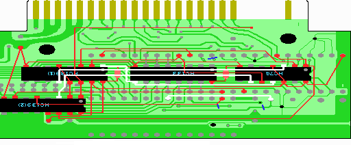

13．配線の山場（３／４）
ここでの配線は回路図で桃色でかかれている部分です。

1. HC133の9ピンとHC74の11ピン、HC139(1)の1ピンをつなげます。
2. HC74の9ピンとHC139(2)の3ピンをつなげます。
3. HC74の3ピンとHC139(1)の12ピンをつなげます。
4. 最後に2212P003の8ピン(/OE)とSRAMの24ピンをつなげます。2212P003周辺は配線が沢山ありますので、実体図では2212P003の8ピンとつながっている別の場所とつなげています。もちろん、直接つないでも構いません。
 次へ
次へ